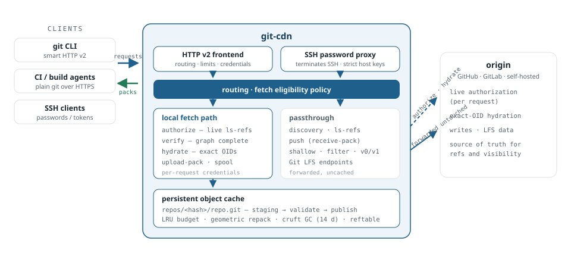

对象进缓存，鉴权留原站。
git-cdn serves git smart HTTP v2 — and an optional SSH password proxy — from a shared object cache on its own domain. Every locally served fetch is still authorized by the origin with the caller's own credentials; a warm cache is checked exactly like a cold one. Clients stay plain git. Only the URL changes.
Four observations shape the design.
CI fleets, build agents and developer machines pull the same repositories from one origin, over and over. A cache in between moves those bytes once per cache instead of once per client.
A mirror that copies objects also copies the access-control
question. git-cdn probes the origin with a live
ls-refs for every locally served fetch; objects in the
cache never authorize a read.
No plugins, no proxy variables. Point the clone URL at the CDN or
rewrite with url.insteadOf; credentials are provided
for the CDN domain and forwarded to the origin.
Git itself negotiates, receives objects and generates packs; Go routes requests, publishes the cache and enforces resource limits — the split and its tradeoffs are written down in the design document.
Discovery and client ls-refs always go to
the origin. A v2 fetch whose wants are currently advertised OIDs can
be served locally, in four steps:
A fresh ls-refs with this request's credentials.
Upstream 401/403/404 responses and their challenges pass through
unchanged; a login page cannot authorize cached data.
Dependency traversal proves the wanted roots are complete. A present commit with a missing blob is a miss — the check is on the graph, not on refs.
Missing roots are fetched by exact OID into staging, validated, then published with GC pins. Verified existing roots join incremental negotiation through alternates.
A request-specific ref view feeds local upload-pack. The response spools to a bounded file and streams after Git exits — so any failure falls back to one complete upstream response.
| Request | Behavior |
|---|---|
| discovery · ls-refs | live upstream forwarding, capabilities and refs preserved |
| v2 fetch, wants are fresh tip / tag / peeled OIDs | served locally — the four steps above |
| have negotiation | haves must be ancestor commits of authorized roots; otherwise upstream |
| shallow · filter · want-ref · unknown extensions · SHA-256 · v0/v1 | forwarded upstream |
| push (receive-pack) · Git LFS endpoints | forwarded upstream, uncached |
The behavior is pinned by 101 test functions across 19 files,
race-enabled in CI, driving an authenticated
git http-backend with standard Git clients —
docs/testing.md.
One store per upstream URL, repository path and object format, at
repos/<hash>/repo.git. Different users and rotated
tokens reuse the same objects; every fetch still authorizes and
hydrates with its own credentials, kept in request memory only.
A 20 GiB default LRU budget across repositories. Access times survive restarts; active leases and queued requests pin their repositories; evicted repositories hydrate again on demand.
Geometric repack on idle repositories, cruft GC with a 14-day minimum retention window. Failures keep the existing packs; capacity shortage skips maintenance without failing clients.
New caches, hydration staging and per-request views use reftable (Git 2.45+). Existing files-format caches keep working; conversion is a documented one-liner.
Missing blobs and packs are detected by graph traversal and fetched by exact OID. Objects land in staging, are validated, then published — ordinary failures never delete the whole cache.
One upstream with direct repository paths, or
/site/… prefixes selecting between hosts. Per-site
credential hosts by default; a credential-bearing request with the
wrong Host gets 421 before the origin is contacted.
An optional frontend terminates SSH and submits the same
password or token to the origin. Strict host-key verification with
optional accept-new enrollment; key-only clients are
rejected with an explanatory banner.
Git LFS authentication and transfer commands pass through with restricted download/upload. Original endpoints and signed object URLs are preserved — LFS data stays on the origin's storage.
/healthz and /metrics: local,
hydration, passthrough and authorization-denial counters, cache
bytes, evictions, in-flight requests. Logs omit credentials and
upstream Git stderr.
docker compose up -d --build --wait
# multi-site default (github + gitlab), loopback-bound:
git clone http://127.0.0.1:8080/github/git/git.git
# the first clone hydrates the cache, the second is local;
# every fetch response carries:
X-GitCDN-Cache-Status: MISS # then HIT# rewrite origin URLs, fleet-wide — plain git, no plugins:
git config --global \
url."https://git-cdn.example/".insteadOf "https://gitlab.com/"
# credentials are provided for the CDN domain
# and forwarded to the origin on every fetchgo build -o bin/git-cdn ./cmd/git-cdn
cp config.example.yaml ~/.git-cdn/config.yaml
./bin/git-cdn # listens on 127.0.0.1:8080
# needs Go 1.26+ and Git 2.45+ (reftable, protocol v2,
# cruft packs); Linux or macOSCacheable v2 fetches run the authorize / verify / hydrate / serve pipeline over a persistent object store; everything else — discovery, push, shallow and filtered requests, LFS — is forwarded to the origin untouched.
